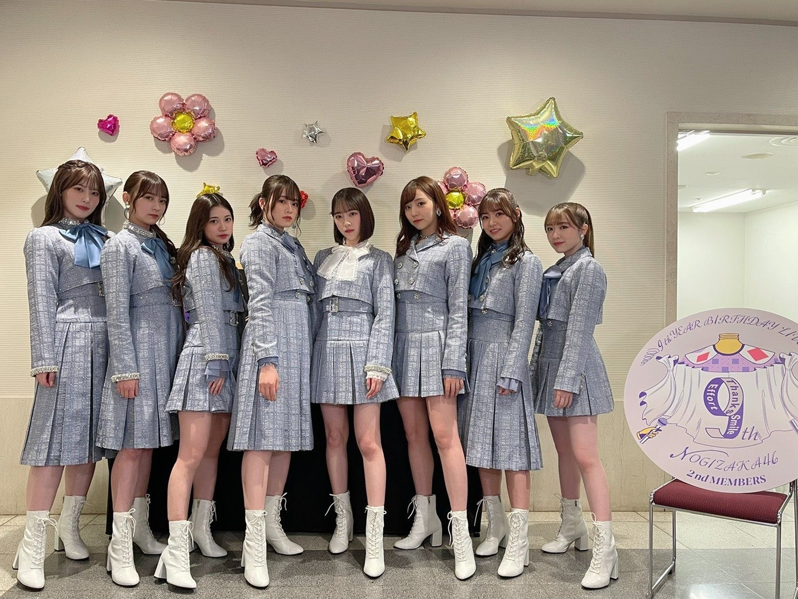
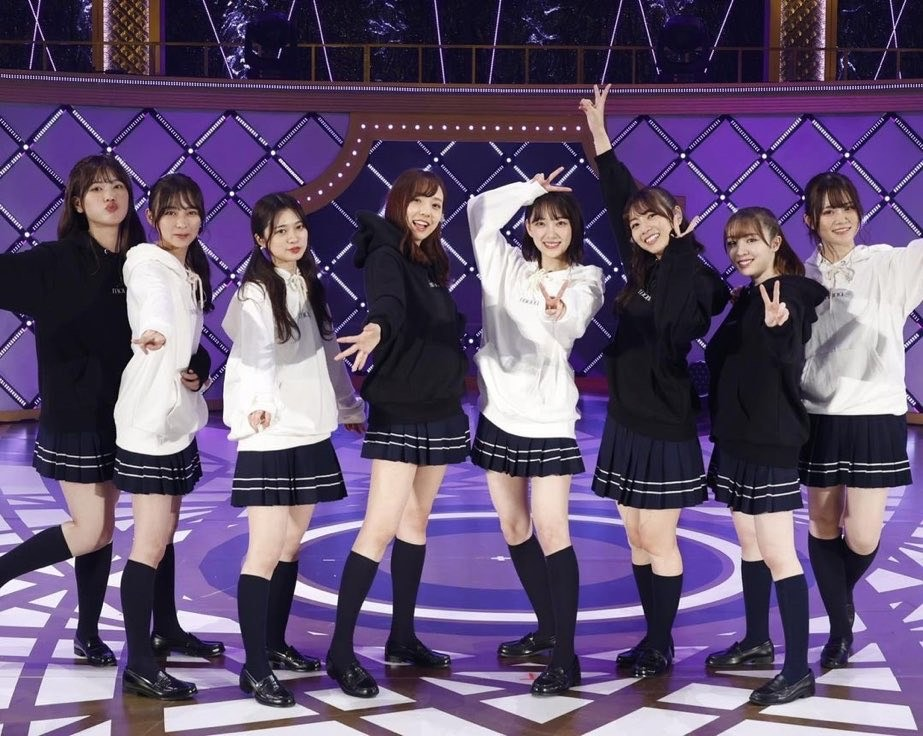

2021/0417Satみずいろ
こんばんは！
伊藤純奈です

すごい絶妙な瞬間の写真(笑)
ちゃんとしたお顔の写真は
Instagramに載せています↓
遅くなりましたが
乃木坂46
9th YEAR BIRTHDAY LIVE
〜2期生ライブ〜
みてくださった皆様ありがとう
ございました☺︎
センター企画では
サヨナラの意味を
歌わせて頂きました！
色々な思い入れがあるこの曲を
やっと叶った2期生ライブで
歌う事ができて嬉しかったです。
そしてみおな、卒業おめでとう！
初期から2期生を引っ張ってくれて
大好きでいてくれてありがとう。
やっぱり2期生の真ん中はみおなだなあと
改めて思いました。
最後までたくさんありがとう。
これからもよろしくねっ
配信という形でしたが
1年越しに2期生ライブ、開催できて
本当に幸せでした！！
ありがとうございました！


不思議な子たちの集まりだなあと
改めて思いました。2期生。(笑)
そんなところが愛おしい〜〜！らぶ！
明日18日は
筒美京平さんのトリビュートコンサートに
ひなちまと参加させて頂きます！
今からとっても緊張していますが
楽しみです☺︎よろしくお願い致します！
それでは〜
2021/04/17 20:18


コメント(355)
応援してます！
2期生ライブ最高でした、！！
2期生ライブ最高でした！
涙止まらなかったです！！
じゅんなちゃんめっちゃかわいかった！
じゅんなちゃんに早く会いたくなりました！
じゅんなちゃんだいすきです！！！☺︎︎
これからもずっとずっと応援してます！！
純奈ちゃんのサヨナラの意味はしっかり真っ直ぐ想いが伝わって聴いてるうちに涙でたよ〜〜。
2期生ちゃんだからこその絆、そして本当に素敵なライブをありがとうございました。
またいつかライブを見れる事を願っています！
聞かせてくれてありがとう！！
これからも応援してます！！
2期最高だった！
本当に素敵なライブでした(´,,•ω•,,｀)♡
また観たいです！
明日も頑張ってください！！
応援してます(*´ω`*)
純奈ちゃんとはやくお話ししたいよー(´,,•ω•,,｀)
今日も世界一好きです。
未央奈は卒業しちゃったけど2期生みんなで頑張ってね
上京した日だったけどギリギリ間に合って見れました✨
泣きすぎて目が腫れるくらい号泣しました あと純奈ちゃんのサヨナラの意味すっごくすっごく感動しました！これからも素敵なパフォーマンスをたくさん見せてね
素敵なライブでした ！
純ちゃんの素敵なパフォーマンスを 直接見られるように
なりますように 〜〜 (,,> <,,)！！
２期生ライブ改めてお疲れ様です！
純がセンターのサヨナラの意味とても良かったです
２期生ライブを見れたこと本当に嬉しく思います！
サヨナラの意味めちゃくちゃ泣いたよ
明日頑張ってねー
2期生ライブ楽しかったよ！泣いて笑って本当に素敵な時間でした。ありがとう！
18日の筒美京平さんのトリビュートコンサートも観に行きます！
純奈ちゃんの歌声が大好きなのでとっても楽しみ！
あ、乃木恋のリアイベもありがとう！
たくさんたくさんありがとう！
すごい瞬間の純奈ちゃんも好き♡
2期生ライブのサヨナラの意味のセンター感動しました。純奈ちゃんのセンター見れて嬉しかった！
これからも2期生大好きです！らぶ！
明日のトリビュートコンサート頑張ってください！
見れなくてごめんなさい(; ;)
純奈ちゃん愛しとるでー！！！！！！！
2期生ライブお疲れ様でした！
未央奈ちゃんとの最後のライブは楽しめたかな？
未央奈ちゃんプロデュースのその青い衣装ほんと可愛いしみんなよく似合ってる
筒美京平さんのトリビュートコンサート出演おめでとう！
ほんとに光栄で豪華な方々との共演は緊張すると思うけど日奈ちゃんとお互い支え合いながら堂々とあの素晴らしい歌声を響かせてきてね~
会場にいる方々をみんな虜にしちゃってね笑
1番は2人が楽しむことだと思うからその場の空気を楽しんで歌ってきてね！
それじゃあ今日はこの辺でまたね
ばいばーい
２期生ライブ、期待以上に素晴らしく感動しました。
センター企画で純奈が選曲理由を話しているときに、ああ、やっぱ純奈はこの曲を選んでくれたんだと、グッと来てしまったし、いい表情していたよ。
配信ならではの演出が本当に素晴らしくて、最初から最後まで涙が止まりませんでした。
未央奈のラストステージでもあったし、全メンバーが集まった時は鳥肌立った。
本当に素敵なグループだよね。
感動的な最高のライブを本当にありがとう。
2期生ライブ楽しかったよーっ。
2期生の強い絆感じたもん。
まずは2期生ライブお疲れ様でした！一年前に悔しい思いをした分、配信という形ではありましたが開催することができて自分もすごく嬉しかったです！
センター企画のサヨナラの意味も一年越しに見れて本当に本当に嬉しかったです。あの曲にかける純奈の想いやそれを汲んだ2期生のパフォーマンスに涙が止まりませんでした。純奈はあのパフォーマンスが最初で最後のチャンスと言ってたけど無責任かもしれないけど自分たちファンはこれから先も純奈がセンターだといいなと勝手に思っています。また純奈センターのサヨナラの意味が見れる日を楽しみにしてます。嫉妬の権利、アナスターシャ 、きっかけ…どれもどれも2期生全員の綺麗で素晴らしいパフォーマンスに心を打たれました。本当にお疲れ様でした！2期生ライブをやってくれてありがとう！！
その後の2期生ハウスも面白かった！！皆んなの素の姿が見れて楽しかったです。ぜひ完全版が見たいです！
明日の筒美京平さんのコンサートは仕事で見れませんが応援してるので頑張ってください！
支離滅裂な文章で毎度申し訳ないです。季節の変わり目ですのでお体にはお気をつけください。27枚目の活動も楽しみにしてます！これからも変わらず応援しております。
改めまして、2期生ライブお疲れ様でした。
最高のライブでした。
サヨナラの意味。
センターで歌えて本当に良かったね。
最高に輝いていました。
未央奈がグループを卒業しました。
きっとこれからも変わらず関係性は続いていくよね。
明日のコンサート、応援しています。
それでは、また。
サヨナラの意味の純奈さん本当に輝いて綺麗でした。
最後の涙がとても印象的でした。
「最後の機会だと思って」と仰ってましたが、是非また観たいです。
2期生ライブおつかれさまでした！♡
前回の2期生ライブで言ってた思いも、純奈ちゃんが大好きで大切な曲だからこそサヨナラの意味を歌うことはきっと色んな覚悟があったと思うのに、今回も歌ってくれてほんとにありがとう！！とっても感動しました〜！！！！純奈ちゃんの歌声大好きで、涙を流して歌う姿はきらきらしててほんとに綺麗でした！
2期生でいる時の純奈ちゃんのくしゃって笑顔が楽しそうで2期生として8人最後を見られて嬉しかったです！
そして、2期生ライブを叶えてくれたこと、頑張ってくれたことほんとにたくさんありがとう！☺︎
素豪華なコンサートに2人が出演すると聞いた時、純奈ちゃんの努力や実力がたくさんの人に届くの嬉しいなって思いました〜！明日は楽しんでね！！！だいすきです！
2期生ライブ、お疲れさまでした！！！
最高のライブでした。
サヨナラの意味、ものすごく心に刺さりました。
純奈さんの歌声に心を動かされた方もたくさん居ると思います。
ライブでは、堀ちゃんにとって最後のライブでしたが、ほんとに素敵なものになったと思います。
2期生8人の強い絆が歌、パフォーマンス、演出、すべてに出ていたと思います。
2期生を好きになってほんとによかった。2期生についてきてよかった。そして、乃木坂46を好きになってよかったと改めて感じた日でした。
本当に幸せな時間をありがとうございました。
これからも、ずっと2期生について行きますし、応援しています。もちろん純奈さんの事も変わらず応援します！！
いつもたくさんの感動と勇気を届けてくれてありがとう！
まだまだ油断できない状況ではありますが、どうかお体には気を付けて下さいね！
明日のコンサートも頑張って下さい！！遠くから応援してます！
僕も純奈さんに負けないくらい、頑張ります！！
錚々たる出演者と肩を並べて凄いね。
やっぱり、なんてったってアイドル、
歌うかな。
じゅんなちゃんもひなちまも舞台経験
豊富で度胸もあるから安心してます。
アイドル代表として頑張って。
さよならの意味でめちゃくちゃ感動しちゃったよ
橋本さんのセンター曲をついに純奈が歌ってる！ってなった笑
嬉しかったなぁ
それと沈金ゲストもすごく嬉しかったし楽しかったよ！
またラジオ聞きたいな
またねー
早く生じゅんなちゃんに会いたい、、
会える日までダイエット頑張ります、、笑笑
2期生ライブとっても素敵でした！
いろいろ書きたい事はあるけれど
今、1番言いたい事は
明日のトリビュートコンサート頑張ってね！
会場には行けないけど応援しています。
純奈ちゃんにこのような機会を頂けたこと、
本当に嬉しいです！！
大好きだよ！
2期生ライブ超超超超たのしかったです！！！！！
サヨナラの意味感動しました（ ; ; ）（ ; ; ）
純奈ちゃんがサヨナラの意味を選んでくれて本当によかったです。
また見たいな〜〜
明日のコンサート見れないけどめちゃくちゃ応援してます＾＾
純奈ちゃんとちまが選ばれたのすごく嬉しかった☺︎
純奈ちゃんスキ〜〜〜〜♡♡♡
2期生ライブお疲れ様！！
「サヨナラの意味」純奈ちゃんの歌声を聴いて涙が出ました。
そして、ラスト歌い終わった時の涙、物凄く綺麗で、それを見て更に涙出たよ、、
未央奈ちゃんのラストに相応しい素敵なライブでした！
本当にありがとう！！2期生最高！！
これからもお仕事がんばってね！！好きー！
サヨナラの意味凄く感動したよ
トリビュートコンサートも応援してる♡♡♡
こんなに素敵な2期生を応援できて幸せです！
サヨナラの意味本当に本当に最高でした！！！
とても感動しました。これからも頑張って〜！！
2期の仲の良さが見ていても心地よいです。
コンサート頑張って！
サヨナラの意味、センターおめでとう！！
2期生は、最強だよ！！
これから応援してるね！大好き！！
こんばんは～(´▽`)ノ
ブログ更新ありがとうございます！
２期生ライブ楽しかったです(^_-)
サヨナラの意味の場面では
泣けてきちゃいましたけどね(^_^;)
すご～くスゴ～クと～ってもトテモ
良かったです！！
でもね
もうその記憶がだんだん薄れてきて…
何度でも見たい聴きたい
ホントそう思いますヾ(≧∇≦)
バスラだから円盤化されるかな？
その時を心待ちにしています(^_-)
明日は何を歌うのかな～？
チケット取ろうかなと思ったけど
諸々状況が厳しいので諦めました
遠くからですが応援しています(*^^)v
素敵な歌声響かせて下さいね！
コメントする